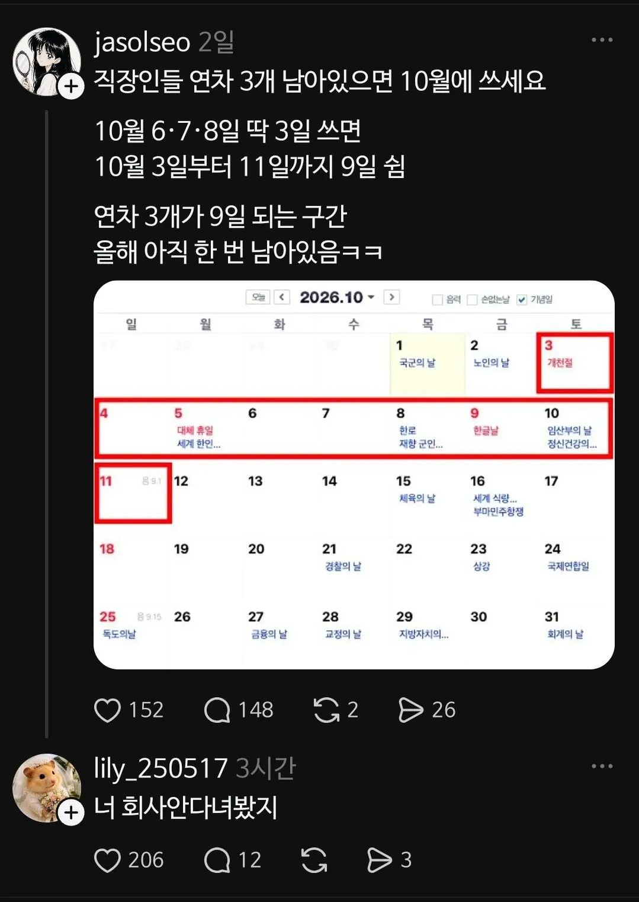

연차 3개 언능 쓰라고 펨붕군!!!

연차 3개 언능 쓰라고 펨붕군!!!
전 직장이었을땐 못 썼겠지만 지금은 공기업이지..바로 ㄱ
미리계획한거 아니면 어디 가겠나 싶다 .. 다들 쉴테니 ㅋㅋ
화요일 오전반차나 갈겨야지
국방부는 10월 1일도쉰다! 개이덕!
4조2교대친구 3연차갈겨서 9일쉬는거 예사에 여름휴가 5일 따로나와서 이 미친새끼 9월에 6일 출근함 씹새끼
원래라면 쓰고 쉬었을껀데 하필 이때 일이 졸라 몰려서 쉴 수가 없음.. 빨간날 쉬는 것도 감지덕지
isms 씨부럴거